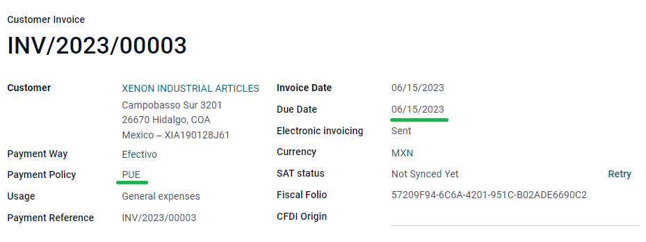
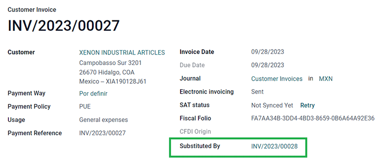
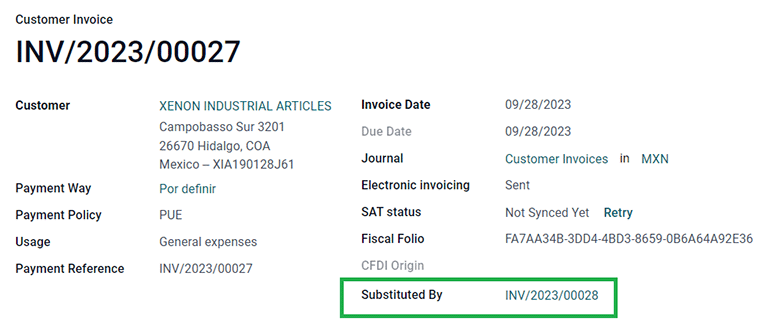
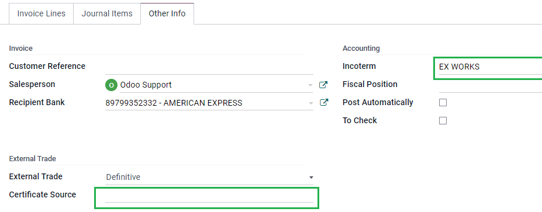
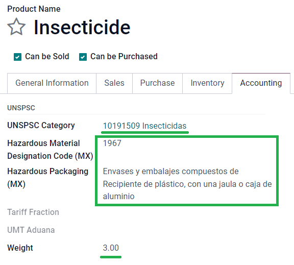
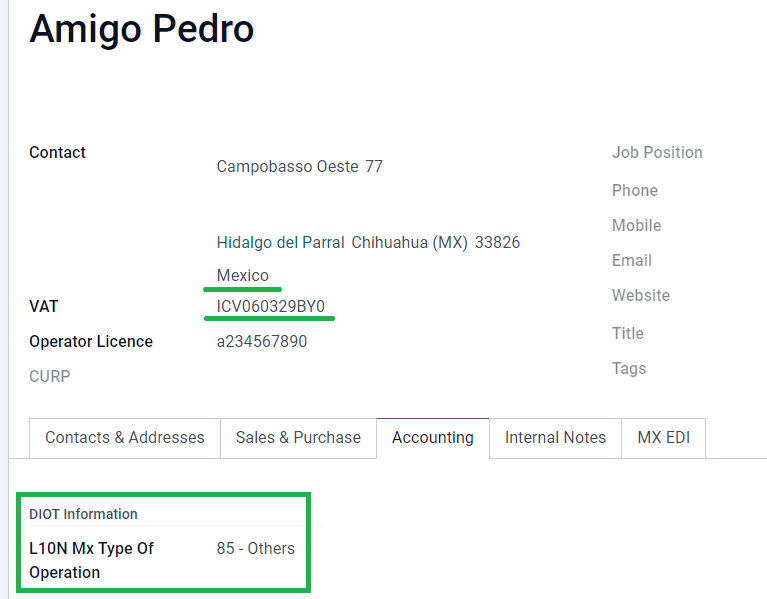

墨西哥¶
网络研讨会¶
还提供了墨西哥本地化视频。该视频介绍了如何从零开始实施本地化，包括如何设置配置、如何完成常见的工作流程，并深入介绍了几个具体的使用案例。
介绍¶
Odoo 墨西哥本地化模块允许根据 CFDI <http://omawww.sat.gob.mx/ tramitesyservicios/Paginas/documentos/Anexo_20_Guia_de_llenado_CFDI.pdf> 版本 4.0 的 SAT 规范签署电子发票，这是一项法律要求，自 2022 年 1 月 1 日起生效。这些模块还增加了相关会计报告（如：DIOT，支持外贸和创建交货指南）。
注解
要在 Odoo 中以电子方式签署任何文件，请确保已安装 电子签名 应用程序。
配置¶
要求¶
在 Odoo 中配置墨西哥本地化模块之前，必须满足以下要求：
Be registered in the SAT, with a valid RFC.
Have a Certificate of Digital Seal (CSD).
Choose a PAC (Proveedor Autorizado de Certificación / Authorized Certification Provider). Currently, Odoo works with the following PACs: Solución Factible, Quadrum (formerly Finkok) and SW Sapien - Smarter Web.
Have knowledge and experience with billing, sales, and accounting in Odoo. This documentation only contains the necessary information needed to use Odoo.
Installing modules¶
Install the following modules to get all the features of the Mexican localization. The Accounting and Contacts modules are required to be installed for this configuration:
名称 |
技术名称 |
描述 |
|---|---|---|
墨西哥 - 会计 |
|
默认 财政本地化套装，为墨西哥本地化添加会计特征，如：最常见的税种和会计科目表 - 基于`SAT 会计科目分组代码 <https://www.gob.mx/cms/uploads/attachment/file/151586/codigo_agrupador.pdf>`_。 |
墨西哥电子数据交换 |
|
包括生成和验证 Electronics Documents 的所有技术和功能要求 - 基于 SAT 发布的技术文档。这样，您就可以向政府发送发票（带或不带附言）和付款补充。 |
墨西哥电子数据交换 4.0 版 |
|
必须按照 CFDI 4.0 的正确规范创建 XML 文档。 |
Odoo Mexican Localization Reports |
|
为墨西哥电子会计改编报告： 会计科目表、试算表和 DIOT。 |
Mexico - Localization Reports for Closing |
|
Necessary to create the Closing Entry (Also known as the month 13th move). |
Odoo Mexican XML Polizas Export |
|
Allows the export of XML files of Journal Entries for a compulsory audit. |
Odoo Mexican XML Polizas Export Edi bridge |
|
Complements the module |
注解
当从头开始安装数据库并选择 墨西哥 作为国家时，Odoo 会自动安装以下模块：墨西哥 - 会计、墨西哥电子数据交换、墨西哥电子数据交换 4.0 版。
以下模块为可选模块。建议*仅*在满足特定需求时安装。请确保这些模块是业务所需的。
名称 |
技术名称 |
描述 |
|---|---|---|
EDI for Mexico (Advanced Features) |
|
Adds the external trade complement to invoices: A legal requirement for selling products to foreign countries. |
EDI v4.0 for Mexico (COMEX) |
|
Adapts the module |
Mexico - Electronic Delivery Guide |
|
Lets you create a Carta Porte: A bill of lading that proves to the government you are sending goods between A & B with a signed electronic document. |
Electronic Delivery Guide for Mexico CFDI 4.0 |
|
Adapts the module |
Odoo Mexico Localization for Stock/Landing |
|
Allows managing customs numbers related to landed costs in electronic documents. |
Configure your company¶
After installing the correct modules, the next step is to verify that your company is configured with the correct data. To do so, go to , and select Update Info under your company name.
Enter the full Address in the resulting form, including: ZIP code, State, Country, and RFC (VAT number).
According to the requirements of the CFDI 4.0, the name of the main company contact must coincide with your business name registered in the SAT, without the legal entity abbreviation.

重要
From a legal point of view, a Mexican company must use the local currency (MXN). Therefore, Odoo does not provide features to manage an alternative configuration. If you want to manage another currency, let MXN be the default currency and use a pricelist, instead.
Next, go to , then select the regime that applies to your company from the drop-down list, and click Save.

小技巧
If you want to test the Mexican localization, the company can be configured with a real address
within Mexico (including all fields), and add EKU9003173C9 as the VAT and ESCUELA
KEMPER URGATE as the Company Name. For the Fiscal Regime, use
General de Ley Personas Morales.
联系人¶
To create a contact that can be invoiced, go to . Then, enter the contact name, full Address including: ZIP code, State, Country, and RFC (VAT number).
重要
As with your own company, all of your contacts needs to have their correct business name registered in the SAT. This also applies to the Fiscal Regime, which needs to be added in the MX EDI tab.
税¶
Some additional configurations for factor type and tax objects need to be added to the sales taxes in order to properly sign invoices.
Factor type¶
The Factor Type field is pre-loaded in the default taxes. If new taxes are created, you need to make sure to configure this field. To do so, go to , then enable the Factor Type field in the Advanced Options tab for all records, with the Tax Type set as Sales.

小技巧
Mexico manages two different kinds of 0% VAT to accommodate two scenarios:
0% VAT set the Factor Type as Tasa
VAT Exempt set the Factor Type as Exento
Tax object¶
CFDI 4.0 的一个要求是，生成的 XML 文件需要（或不需要）细分操作的税额。在 XML 文件中会添加三种不同的可能值：
01: 不含税 - 如果发票行不含任何税项，则自动添加此值。02: 含税 - 这是任何含税发票行的默认配置。03: 含税，不强制分解 - 某些客户可按需触发此值，以取代 02。
要使用 03 值，请导航至 ，并激活 无税款明细 复选框。

重要
:guilabel:`无税款明细`值**仅**适用于特定的财务制度和/或税种。在进行任何修改之前，请先咨询您的会计师，确认是否需要为您的业务使用这个功能。
其他税项配置¶
在记录付款时，Odoo 会将税款从现金基准转换账户转移到在 定义`选项卡中设置的账户。对于这种转移，在重新分类税款的日记账分录中会使用一个税基账户: (`Base Imponible de Impuestos en Base a Flujo de Efectivo) 。请不要删除这个账户。
如果您在 、 ISR 或 IEPS)。 Odoo 仅支持这三种税种组。

产品¶
To configure products, go to , then select a product to configure, or Create a new one. In the Accounting tab, and in the UNSPSC Product Category field, select the category that represents the product. The process can be done manually, or through a bulk import.
注解
All products need to have an SAT code associated with them in order to prevent validation errors.
电子开票¶
PAC凭证¶
After you have processed your Private Key (CSD) with the SAT, you must register directly with the PAC of your choice before you start creating invoices from Odoo.
Once you’ve created your account with any of these providers, go to . Under the MX PAC section, enter the name of your PAC with your credentials (PAC username and PAC password).

小技巧
If you do not have credentials, but want to test the electronic invoicing, you can activate the MX PAC test environment checkbox, and select Solucion Factible as the PAC. You do not need to add a username or password for a test environment.
.cer and .key certificates¶
The digital certificates of the company must be uploaded within
the MX Certificates section. To do so, navigate to . Under the MX Certificates section, select
Add a line, and a window will open. Click Create, and from there, upload
your digital Certificate (.cer file), your Certificate Key
(.key file), and your Certificate Password. To finish, click on Save
& Close.

工作流¶
电子开票¶
The invoicing process in Odoo is based on Annex 20 version 4.0 of electronic invoicing of the SAT.
客户开票¶
To start invoicing from Odoo, a customer invoice must be created using the standard invoicing flow.
While the document is in draft mode, changes can be made to it (the correct Payment Way or Usage that the customer might require can be added, for example.)
After you Confirm the customer invoice, a blue message appears stating: The invoice will be processed asynchronously by the following E-invoicing service: CFDI (4.0).
Pressing the Process Now button sends the document to the government so it can be signed. After receiving the signed document back from the government, the Fiscal Folio field appears on the document, and the XML file is attached in the chatter.
小技巧
If you click Retry in the SAT status field on the invoice, you can confirm if the XML file is valid in the SAT.
If you are in a testing environment, you will always receive the message Not Found.
To send the signed invoice to your client by mail, you can send both the XML and PDF files together, directly from Odoo, by clicking the Send & Print button. You can also download the PDF file to your computer, by clicking the Print button, and selecting the desired print option.
贷记单¶
While an invoice is a document type “I” (Ingreso), a credit note is a document type “E” (Egreso).
The only addition to the standard flow for credit notes is that, as a requirement of the SAT, there has to be a relation between a credit note and an invoice through the fiscal folio.
Because of this requirement, the field CFDI Origin adds this relation with a 01|,
followed by the fiscal folio of the original invoice.

小技巧
For the CFDI Origin field to be automatically added, use the Add Credit Note button from the invoice, instead of creating it manually.
Payment complements¶
付款政策¶
One addition of the Mexican localization is the Payment Policy field. According to the SAT documentation, there are two types of payments:
PUE(Pago en una Sola Exhibición/Payment in a Single Exhibition)PPD(Pago en Parcialidades o Diferido/Payment in Installements or Deferred)参见
The difference lies in the Due Date or Payment Terms of the invoice.
To configure PUE invoices, navigate to , and either select an invoice Due Date within the same month, or choose a payment term that does not imply changing the due month (immediate payment, 15 days, 21 days, all falling within the current month).
小技巧
Some Payment Terms are already installed by default, and can be managed from .
To configure PPD invoices, navigate to , and select an invoice with a Due Date after the first day of the following month. This also applies if your Payment Term is due in the following month.

重要
Because the PPD policy implies that an invoice is not going to get paid at the moment, the correct Payment Way for the PPD invoices is 99 - Por Definir (To define).
支付流¶
In both cases, the payment process in Odoo is the same, the main difference being payments related to PPD invoices trigger the creation of a document type “P” (Pago).
If a payment is related to a PUE invoice, it can be registered with the wizard, and be associated with the corresponding invoice. To do so, navigate to , and select an invoice. Then, click the Register Payment button. The invoice status changes to In Payment, since the payment is effectively validated when it is bank reconciled.
参见
While this process is the same for PPD invoices, the addition of the creating an electronic document means some additional requirements are needed to correctly send the document to the SAT.
From an invoice, you need to confirm the specific Payment Way where you received the
payment. Because of this, the Payment Way field cannot be set as 99 - Por Definir
(To Define).
If you are going to add a bank account number in the Accounting tab of a customer’s contact card, it must have a valid account number.
注解
The exact configurations are in the Anexo 20 of the SAT. Usually, the Bank Account needs to be 10 or 18 digits for transfers, 16 for credit or debit cards.
If a payment is related to a signed invoice with the Payment Policy PPD, Odoo
generates the corresponding payment complement automatically, once you click Process
Now.

警告
A payment in MXN cannot be used to pay multiple invoices in USD. Instead, the payment should be separated into multiple payments, using the Register Payment button on the corresponding invoices.
Invoice cancellations¶
It is possible to cancel the EDI documents sent to the SAT. According to the Reforma Fiscal 2022, since January 1st, 2022, there are two requirements for this:
With all cancellation requests, you must specify a cancellation reason.
After 24 hours have passed since the creation of the invoice, the client must be asked to accept the cancellation.
There are four different cancellation reasons. In Odoo, you can cancel invoices with the reasons 01 Invoices sent with errors with a relation, and 02 Invoices sent with errors without a relation.
The following sections break down the process of canceling invoices for each cancellation reason in Odoo.
重要
Odoo has certain limitations to canceling invoices in the SAT: The reasons 03 and 04 (Operation did not take place and Nominative transactions related to a global invoice, respectively) are not currently supported by Odoo. For this, you need to cancel the invoice directly in the SAT, and press Retry in the SAT Status field.
01 - invoices sent with errors with a relation¶
This cancellation reason must be used when a new invoice needs to substitute the original one, due to an error in any field.
Begin by navigating to , and select the old
invoice. Copy the Fiscal Folio from the old invoice. Then, navigate to the new invoice,
and in the CFDI Origin field, add the value 04| and paste the Fiscal Folio
of the old invoice after the value. Finally, sign the new document.
Next, navigate back to the old invoice, and notice the Substituted By field is now available. Click the Request EDI Cancellation button on the old invoice, and then click Process Now in the blue section that appears. The invoice status changes to Canceled, and a confirmation is logged in the chatter.
Now, the invoice should be canceled in the SAT as well. You can confirm this was done correctly, by pressing Retry in the SAT status field.
If the document was canceled more than 24 hours after its creation, you may need to ask the client to accept the cancellation in their “Buzón Tributario” directly from the SAT website.
注解
The 04| is only a code that helps Odoo to perform this process. It has no relation to the
method 04 reason for cancellation.
 

02 - invoices sent with errors without a relation¶
This cancellation reason has to be used when an invoice was sent with an error in any field, and does not need to be replaced by another one.
For this case, navigate to , and select the old invoice. From here, the only requirement is to click the Request EDI Cancellation button, and then click the Process Now button.
Because the field Substituted By does not appear when using this cancellation reason, the SAT should automatically detect that the cancellation reason is 02.
Payment cancellations¶
It is also possible to cancel Payment Complements. For this, go to the payment, via , and select Request EDI Cancellation. As with invoices, a blue button will appear. Click Process now, and the document will be sent to the SAT. After a few seconds, you can click Retry to confirm the current SAT status.
Finally, the payment status is moved to Cancelled.
注解
Just like invoices, when you create a new Payment Complement, you can add the relation of the
original document, by adding a 04| plus the fiscal folio in the CFDI Origin field.
Invoicing special use cases¶
CFDI to public¶
If the customer you are selling goods or services to does not require an invoice, a CFDI to Public has to be created.
If you use the Customer name PUBLICO EN GENERAL, an error will be triggered. This is a
main change in the CFDI 4.0 that requires invoices with that specific name to need additional
fields, which Odoo does not currently support. So, for a CFDI to Public to be created, you need to
add any name to your customer that is not PUBLICO EN GENERAL. (For example: CLIENTE FINAL).
In addition to this, it is required that the ZIP code of your company is added, the
generic RFC is set as XAXX010101000, and the Fiscal Regime of your customer must be
set as: Sin obligaciones fiscales.

多币种¶
The main currency in Mexico is MXN. While this is mandatory for all Mexican companies, it is possible to send and receive invoices (and payments) in different currencies. To enable the use of multicurrency, navigate to the , and set Mexican Bank as the Service in the Automatic Currency Rates section. Then, set the Interval field to the frequency you wish to update the exchange rates.
This way, the XML file of the document will have the correct exchange rate, and the total amount, in both the foreign currency and in MXN.
It is highly recommended to use a bank account for each currency.
注解
The only currencies that automatically update their exchange rate daily are: USD, EUR, GBP, and JPY.

Down payments¶
There can be cases where you receive a payment in advance from a customer that needs to be applied to an invoice later. In order to do this in Odoo, it is required to properly link invoices to each other with the CFDI Origin field. To do so, it is necessary to have the Sales app installed.
参见
“墨西哥首付登记的官方文件<http://omawww.sat.gob.mx/tramitesyservicios/Paginas/documentos/Caso_uso_Anticipo.pdf>”_。
First, navigate to the app to create a product Anticipo and configure it.
The Product Type must be Service, and use the UNSPSC Category
must be: 84111506 Servicios de facturación.
Then, go to , and add the Anticipo product as the default.
Create a sales order with the total amount, and create a down payment (either using a percentage or fixed amount). Then, sign the document, and Register the Payment.
When the time comes for the customer to get the final invoice, create it again from the same sales order. In the Create Invoices wizard, select Regular Invoice, and uncheck Deduct down payments.
Then, copy the Fiscal Folio from the first invoice, and paste it into the
CDFI Origin of the second invoice, adding the prefix 07| before the value. Then, sign
the document.
After this, create a credit note for the first invoice. Copy the Fiscal Folio from the
second invoice, and paste it in the CFDI Origin of the credit note, adding the prefix
07|. Then, sign the document.
With this, all electronic documents are linked to each other. The final step is to fully pay the new invoice. At the bottom of the new invoice, you can find the credit note in the Outstanding credits - add it as payment. Finally, register the remaining amount with the Register Payment wizard.
External trade¶
The external trade is a complement to a regular invoice that adds certain values in both the XML and PDF, to invoices with a foreign customer according to SAT regulations, such as:
The specific address of the receiver and the sender
The addition of a Tariff Fraction that identifies the type of product
The correct Incoterm (International Commercial Terms), among others (certificate of origin and special units of measure).
This allows the correct identification of exporters and importers, in addition to expanding the description of the merchandise sold.
Since January 1, 2018, external trade is a requirement for taxpayers, who carry export operations of type A1. While the current CFDI is 4.0, the external trade is currently on version 1.1
In order to use this feature, the modules l10n_mx_edi_extended and l10n_mx_edi_extended_40 have to be installed.
重要
Before installing, make sure your business needs to use this feature. Consult your accountant first, if needed, before installing any modules.
配置¶
联系人¶
To configure your company contact for external trade, navigate to , and select your Company. While the CFDI 4.0 requirements ask you to add a valid ZIP code in your contact, the external trade complement adds the requirement that your City and the State must also be valid. All three fields must coincide with the Official SAT Catalog, or you will receive an error.
警告
Add the City and State in the company’s contact, not in the company itself. You can find your company’s contact in .
The fields Locality and Colony Code are optional and can be added in the company directly in . These two fields have to coincide with the data in the SAT.

To configure the contact data for a foreign receiving client, navigate to , and select the foreign client’s contact. The contact must have the following fields completed to avoid errors:
The entire company Address, including a valid ZIP code and the foreign Country.
The format of the foreign VAT (tax identification number, for example: Colombia
123456789-1)In the MX EDI tab, you need to address if the customer receives goods for a period of time temporarily (Temporary) or permanently (Definitive).
重要
If the new contact was created by duplicating another existing contact from Mexico, make sure to delete any carried over information from the Fiscal Regime field. In addition, do not enable the No Tax Breakdown option. Selecting this option hides mandatory fields that are required for external trade contact configuration.

注解
In the resulting XML and PDF files, the VAT is automatically replaced by the generic
VAT for abroad transactions: XEXX010101000.
产品¶
All products involved with external trade have four fields that are required, two of them exclusive to external trade.
The Internal Reference of the product is in the General Information tab.
The Weight of the product must be more than
0.The correct Tariff Fraction of the product in the Accounting tab.
The UMT Aduana corresponds to the Tariff Fraction.

小技巧
If the UoM code of the Tariff Fraction is
01, the correct UMT Aduana iskg.If the UoM code of the Tariff Fraction is
06, the correct UMT Aduana isUnits.
Invoicing flow¶
Before creating an invoice, it is important to take into account that external trade invoices require to convert the amounts of your product into USD. Therefore, multicurrency must be enabled and USD must be activated in the Currencies section. The correct Service to run is Mexican Bank.
Then, with the correct exchange rate set up in , the only fields left are Incoterm and the optional Certificate Source in the Other Info tab.
Finally, sign the invoice with the same process as a regular invoice, and click the Process Now button.
发货指南¶
A Carta Porte is a bill of lading: a document that states the type, quantity, and destination of goods being carried.
On December 1st, 2021, version 2.0 of this CFDI was implemented for all transportation providers, intermediaries, and owners of goods. Odoo is able to generate a document type “T” (Traslado), which, unlike other documents, is created in a delivery order instead of an invoice or payment.
Odoo can create XML and PDF files with (or without) ground transport, and can process materials that are treated as Dangerous Hazards.
In order to use this feature, the modules l10n_mx_edi_extended, l10n_mx_edi_extended_40, l10n_mx_edi_stock and l10n_mx_edi_stock_40 have to be installed.
In addition to this, it is necessary to have the Inventory and Sales apps installed, as well.
重要
Odoo does not support Carta Porte type document type “I” (Ingreso), air, or marine transport. Consult your accountant first if this feature is needed before doing any modifications.
配置¶
Odoo manages two different types of CFDI:
No Federal Highways: Is used when the Distance to Destination is less than 30 KM.
Federal Transport: Is used when the Distance to Destination exceeds 30 KM.
Other than the standard requirements of regular invoicing (The RFC of the customer, the UNSPSC code, etc.), if you are using No Federal Highways, no external configuration is needed.
For Federal Transport, several configurations have to be added to contacts, vehicle setups, and products. Those configurations are added to the XML and PDF files.
Contacts and vehicles¶
Like the external trade feature, the Address in both the company and the final customer
must be complete. The ZIP code, City, and State must coincide
with the Official SAT Catalog for Carta Porte <sat-catalog_>_.
小技巧
The field, Locality, is optional for both addresses.

重要
The origin address used for the delivery guide is set in . While this is set as the company address by default, you can change it according to your correct warehouse address.
Another addition to this feature is the Vehicle Setups menu found in . This menu lets you add all the information related to the vehicle used for the delivery order.
All fields are mandatory to create a correct delivery guide.
小技巧
The fields, Vehicle Plate Number and Number Plate, must contain between 5 to 7 characters.
In the Intermediaries section, you must add the operator of the vehicle. The only mandatory fields for this contact are the VAT and Operator Licence.

产品¶
Similar to regular invoicing, all products must have a UNSPSC category. In addition to this, there are two extra configurations for products involved in delivery guides:
The Product Type must be set as Storable Product for stock movements to be created.
In the Inventory tab, the field Weight should have more than
0.
警告
Creating a delivery guide of a product with the value 0 will trigger an error. As the
Weight has been already stored in the delivery order, it is needed to return the
products, and create the delivery order (and delivery guide) again with the correct amounts.
Sales and inventory flow¶
To create a delivery guide, first, you need to create and confirm a sales order from . This generates a Delivery smart button. Click it, and Validate the transfer.
After the status is set to Done, you can edit the transfer, and select the Transport Type (either No Federal Highways or Federal Transport).
If your delivery guide has the type No Federal Highways, you can save the transfer, and then click Generate Delivery Guide. The resulting XML can be found in the chatter.
注解
Other than the UNSPSC in all products, delivery guides that use No Federal Highways do not require any special configuration to be sent to the government.
If your delivery guide has the type, Federal Transport, the tab MX EDI
appears. There, enter a value in Distance to Destination (KM) bigger than 0, and
select the Vehicle Setup used for this delivery.

Dangerous hazards¶
在 官方 SAT 目录 <http://omawww.sat.gob.mx/tramitesyservicios/Paginas/complemento_carta_porte.htm>`_中，:guilabel:`UNSPSC 类别`中的某些值被视为*危险危害*。在使用 :guilabel:`联邦运输 创建交货指南时，需要额外考虑这些类别。
首先，从 选项卡中，危险品指定代码（MX） 和 危险包装（MX） 字段必须填写 SAT 目录中的正确代码。
在 中，还必须填写 环境保险 和 环境保险政策 中的数据。之后，继续按照常规流程创建交货指南。

海关编号¶
*海关申报单*（Pedimento Aduanero）是一份财务文件，证明已向财政实体（SAT）支付所有缴款，包括货物进出口。
根据 CFDI 4.0 的 附件 20，在发票货物来自一手进口业务的单据中，海关编号 字段需要添加到业务涉及的所有产品行中。
要执行此操作，必须安装 l10n_mx_edi_landing 模块，以及 库存、采购 和 销售 应用程序。
重要
不要将这一特征与对外贸易相混淆。海关编号与进口货物直接相关，而对外贸易补充则与出口相关。如果需要此功能，请先咨询您的会计师，然后再做任何修改。
配置¶
In order to track the correct customs number for a specific invoice, Odoo uses landed costs. Go to . Make sure that Landed Costs is activated.
首先创建一个*服务*类型的产品，名为 Pedimento。在 采购 选项卡中，激活 为到岸成本 并选择 默认分割方法。
然后，配置保存海关编号的*可储存产品*。要执行此操作，请创建可储存产品，并确保 产品类别 具有以下配置。
成本计算方法：选择 FIFO 或 AVCO
库存估值：自动
库存估值账户: 115.01.01 Inventario。
库存日记账: 库存估值
库存输入账户: 115.05.01 Mercancías en tránsito
库存输出账户: 115.05.01 Mercancías en tránsito


采购和销售流程¶
配置产品后，请按照标准 采购流程。
从 创建采购订单。然后，确认订单，显示 收货 智能按钮。点击 收货 智能按钮以 验证 收据。
进入 ，创建新记录。添加刚创建的转账，以及：产品 Pedimento 和 海关编号。
可选择添加成本金额。然后，验证到岸成本。一旦 已发布，与该收据相关的所有产品都会分配到海关编号。
警告
You can only add the Pedimentos number once, so be careful when associating the correct number with the transfer(s).

Now, create a sales order, and confirm it. This should trigger a Delivery smart button. Validate it.
Finally, create an invoice from the sales order, and confirm it. The invoice line related to your product has a customs number in it. This number should match the customs number added in the Landed Costs record you created earlier.

Electronic accounting¶
For Mexico, Electronic Accounting refers to the obligation to keep accounting records and entries through electronic means, and to enter accounting information on a monthly basis, through the SAT website.
It consists of three main XML files:
The updated list of the chart of accounts that you are currently using.
A monthly trial balance, plus a closing entry report, also known as: Trial Balance Month 13.
Either optional, or for a compulsory audit, an export of the journal entries in your general ledger.
The resulting XML files follow the requirements of the Anexo Técnico de Contabilidad Electrónica 1.3.
In addition to this, you can generate the DIOT: A report of vendor’s journal entries that involve IVA taxes that can be
exported in a .txt file.
In order to use these reports, the modules l10n_mx_reports, l10n_mx_reports_closing, l10n_mx_xml_polizas and l10n_mx_xml_polizas_edi have to be installed, as well as the Accounting.
重要
The specific characteristics and obligations of the reports that you send might change according to your fiscal regime. Always contact your accountant before sending any documents to the government.
科目表¶
The chart of accounts in México follows a specific pattern based on SAT’s’ Código agrupador de cuentas.
You can create any account, as long as it respects SAT’s encoding group: the pattern is
NNN.YY.ZZ or NNN.YY.ZZZ.
Example
Some examples are 102.01.99 or 401.01.001.
When a new account is created in , with the SAT encoding group pattern, the correct grouping code appears in Tags, and your account appears in the COA report.
Once you create all your accounts, make sure the correct Tags are added.
注解
You cannot use any pattern that ends a section with a 0 (such as 100.01.01, 301.00.003 or
604.77.00). This triggers errors in the report.
Once everything is set up, go to , click the (down arrow) next to the PDF button, and select COA SAT (XML). This generates an XML file with your accounts, which you can upload directly to the SAT website.
试算表¶
The trial balance reports the initial balance, credit, and total balance of your accounts, provided that you added their correct encoding group.
To generate this report in an XML format, go to . Select the month you want to download in the calendar, then click the (down arrow) next to the PDF button, and select SAT (XML).

注解
Odoo does not generate the Balanza de Comprobación Complementaria.
Month 13 trial balance¶
The Month 13 report is a closing balance sheet that shows any adjustments or movements made in the accounting to close the year.
To generate it, proceed as follows:
Go to and create a new entry for all the amounts to be changed, balancing the debit and/or credit of each one.
In the Other Info tab, enable the Month 13 Closing option.
Go to , click the calendar, and select Month 13.
Click the (down arrow) next to the PDF button, and select SAT (XML).
总账¶
By law, all transactions in Mexico must be recorded digitally. Since Odoo automatically creates all the underlying journal entries of your invoicing and payments, you can export your journal entries to comply with SAT’s audits and/or tax refunds.
小技巧
You can filter by period, or by journal, according to your current needs.
To create the XML, go to , click the (down arrow) next to the PDF button, and select XML (Polizas). In the XML Polizas Export Options window, choose between four different Export types:
Tax audit
Audit certification
Return of goods
Compensation
For Tax audit or Audit certification, you need to write the Order Number provided by the SAT. For Return of goods, or Compensation, you need to write your Process Number, also provided by the SAT.
注解
If you want to see this report without sending it, use ABC6987654/99 for Order
Number and AB123451234512 for Process Number.
DIOT报告¶
The DIOT (Declaración Informativa de Operaciones con Terceros / Informative Declaration of Operations with Third Parties) is an additional obligation with the SAT, where the current status of creditable and non-creditable payments, withholdings, and refunds of VAT from your vendor bills, are provided to the SAT.
Unlike other reports, the DIOT is uploaded to a software provided by the SAT that contains the
A-29 form. In Odoo, you can download the records of your transactions as a .txt file that
can be uploaded to the form, avoiding direct capture of this data.
The transactions file contains the total amount of your payments registered in vendor bills, broken down into the corresponding types of IVA. The VAT and Country is mandatory for all vendors.
To generate the DIOT report, go to .
Select the month you want to download in the calendar, then click the
(down arrow) next to the PDF button to select Report: DIOT (MX)
and download the .txt file.

重要
You need to fill the L10N Mx Type of Operation field in the Accounting tab of each one of your vendors to prevent validation errors. Make sure that your foreign customers have their country set up for L10N Mx Nationality to appear automatically.
